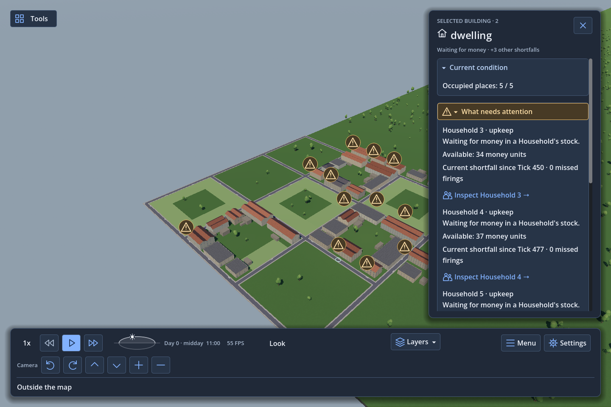
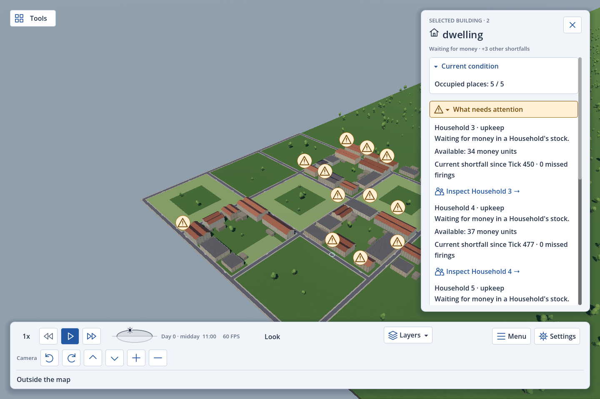
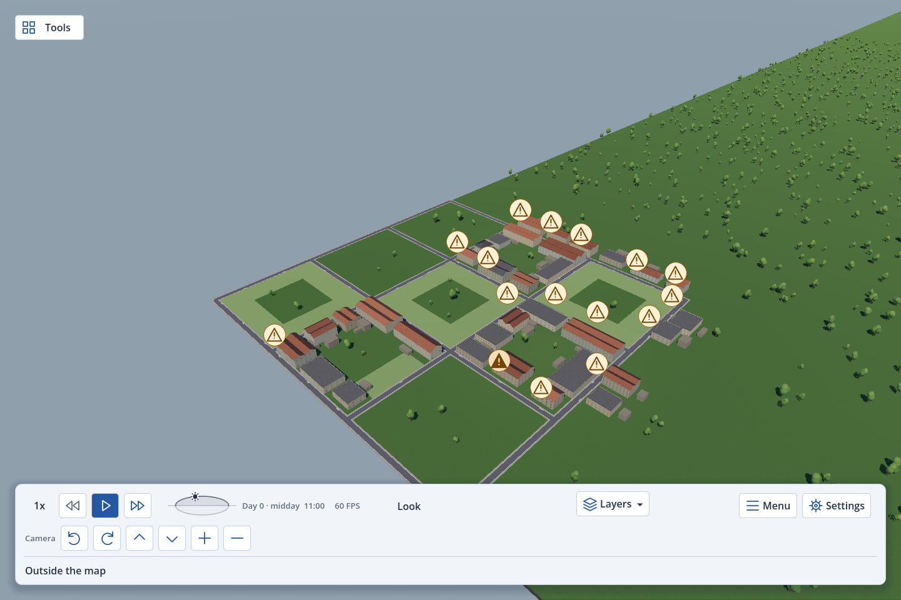

The icons in the interface
Outline by default. Matching filled shapes on hover. Selection keeps its highlighted button state.
Tap an image to open it at full size. Original comparison
Dark theme

Light theme

Hover on a trouble mark
